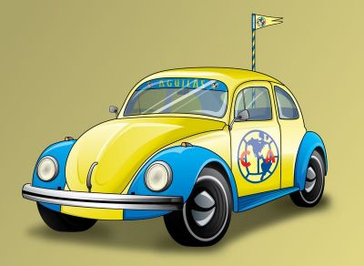

<!DOCTYPE html>
<html lang="es">
<head>
	<meta charset="UTF-8">
	<title>15 - Eventos en JavaScript</title>

	<script type="text/javascript">
		/*
		Evento: Desencadenante de una acción.
		
		¿Quién desencadena la acción?
		Usuario (hacer click, pasar mouse sobre un elemento, etc)
		Sistema (por ejemplo al cargar la ventana (window.onload))

		Manejador de evento: código que procesa el evento

		Formas de construir un evento en js
		- Eventos en linea (valido solo para una etiqueta)
		- Eventos con propiedades (valido para todas las hojas con link a la pajina de js)
		- addEventListener(), nuevo en html5, más recomendado, permite establecer varios manejadores de eventos en un mismo objeto
			recibe 3 argumentos:
				- nombre del evento
				- función a ejecutar
				- valor booleano (gestionar elementos anidados)
		*/

		//var imagen;

		//Cambiar imagen a un array para guardar todas las imagenes.
		var imagen; //= new Array(2);

		//Declarando una funcion.
		function tipoAuto(){
			alert("Eventos en JavaScript");
		}

		//funcion como manejador
		function ManejaAuto(){
			//Seleccionando determinado elemento para desatar un evento
			//document.getElementsByTagName("img")[0].onclick = tipoAuto;

			//Obteniendo valores en un array
			//La variable se cambio a global para poder utilizarla en otras funciones.
			imagen = document.getElementsByTagName("img")[0];

			//Indicando evento, el onClick se utiliza solo cuando va en linea. aquí se le quita el on.
			//El metodo addEventListener tiene las siguientes propiedades. tipoEvento, nombreEvento y caso para cuando esta anidado
			imagen.addEventListener("click",tipoAuto,false);

			//Agregando más eventos a un solo objeto (imagen en este caso)
			imagen.addEventListener("mouseover",crecer,false);
			imagen.addEventListener("mouseout",disminuir,false);

			//una ventaja de una event listener es que un elemento puede desencadenar varios elemento como se ven en el sisguiente ejemplo:
		}

		//Funcion para crecer la imagen
		function crecer(){
			imagen.width = 300;
			imagen.height = 250;
		}

		//Funcion para disminuir
		function disminuir(){
			imagen.width = 250;
			imagen.height = 200;
		}

		//Cargar código al cargar la página
		window.onload = ManejaAuto;


	</script>
</head>
<body>
	<!-- 
	Imagen desatando evento onClick en linea, no se recomienda 
	<p></p>
	-->

	<!-- Imagen desatando evento cargado en una función -->
	<p></p>

	<!-- <p>&nbsp;&nbsp;&nbsp;&nbsp;</p> -->
</body>
</html>